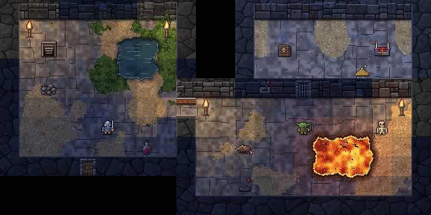
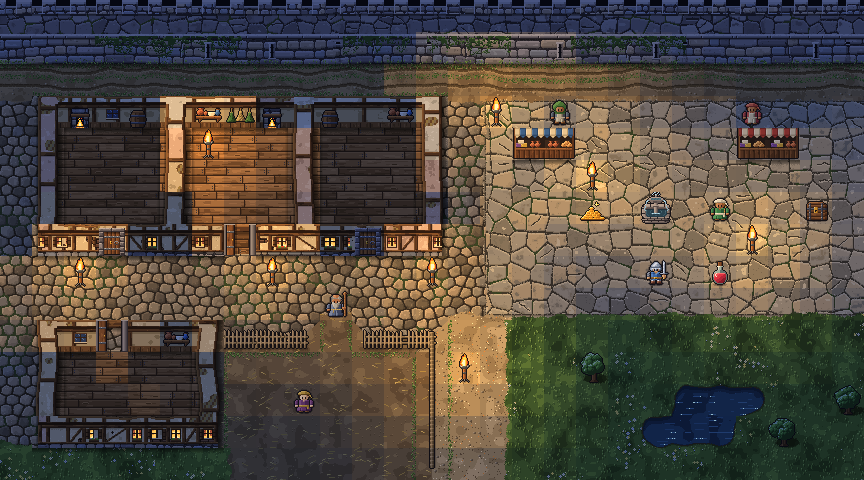
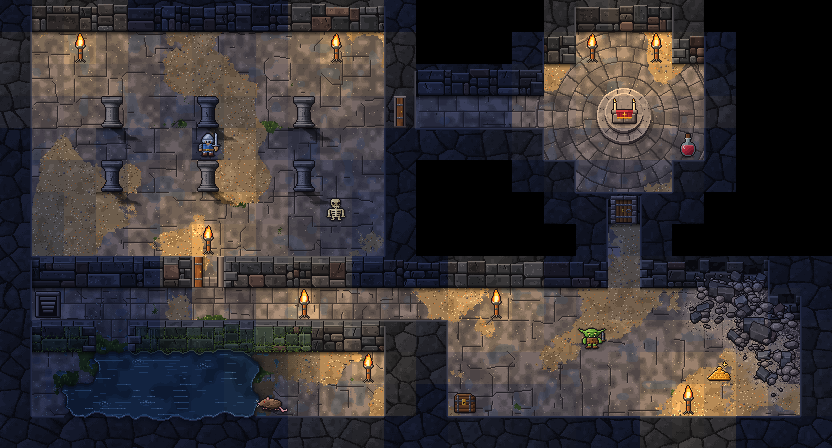
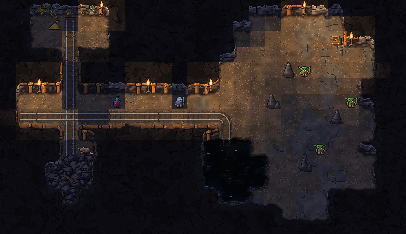
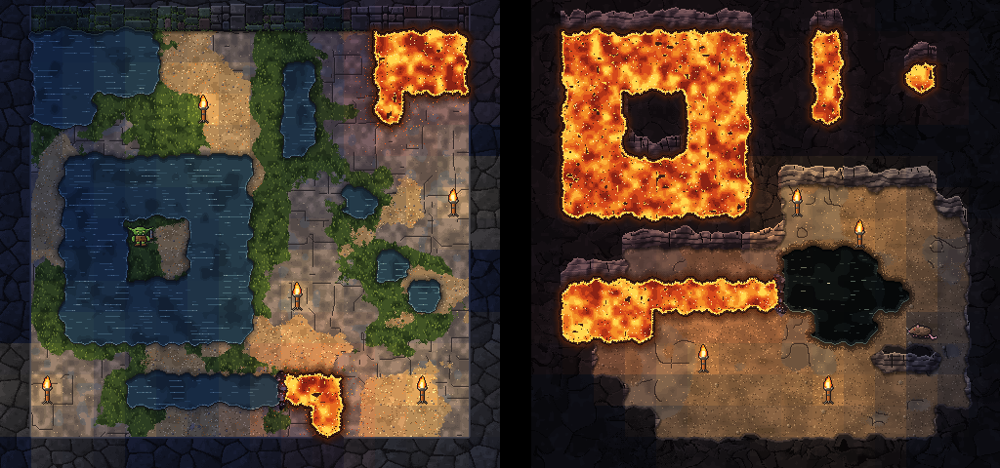

Torchlit, 32×32
Still being tried · 1 version, newest first
Torchlit drawn again with 32 by 32 pixels in every tile, in the same rooms laid out cell for cell, so the two can be opened side by side. At the size the game draws them the tiles are no bigger, only finer: every stone has its own shape and light, doors and timbers show their grain, the adventurer wears mail you can see, and lava and water wander twice as far across the tiles. The ways of drawing the characters, the creatures, the chests and the hero in their gear come in a later round. The tiles are shown unlit; the light is laid over the room as a whole.
Version 1 19 October 2026
The first drawing: Torchlit with 32 by 32 pixels in every tile, in the test room, the City, the Shallows, the Mines and the room where lava and water meet the rest, each laid out cell for cell as at 16×16. Every stone has its own shape and light; doors, timbers and floors show their grain; the adventurer wears mail you can see and each townsperson dresses differently; lava and water wander twice as far across the tiles, and their edges are still pieces a game could keep in a tile atlas. The ways of drawing the characters, the creatures, the chests and the hero in their gear come in a later round.
Feedback build a 32x32 version of torchlit so I can compare the two
The test room · The City · The Shallows · The Mines · Where lava and water meet the rest
The test room
The room every look draws, cell for cell as in Torchlit, 16×16, so the two can be laid side by side.

Tiles
- Floor
- Lit floor
- Stone wall
- Wall face
- Door
- Open door
- Gate door
- Switch
- Water
- Lava
- Rubble
- Altar
- Lever
- Stairs down
- Torch
- Chest
- Gold
- Potion
- Adventurer
- Goblin
- Skeleton
- Giant rat
The City
Where every adventure starts, at night under torchlight, laid out as in Torchlit, 16×16: the city wall, a terrace of timber-framed houses, two market stalls and a fountain on the square, and a fenced yard, grass and a pond beyond.

Tiles
- Cobbles
- Plaza flags
- Yard
- Grass
- Dirt path
- Track
- House floor
- Stone wall
- Wall face
- House wall
- House wall face
- Fence
- Door
- Open door
- Tree
- Water
- Fountain
- Torch
- Townsfolk
- Adventurer
- Potion
- Gold
The Shallows
The first floors below the City, halls of worked stone, laid out as in Torchlit, 16×16: a pillared hall, a small round shrine with an altar, a flooded chamber and a room whose corner has fallen in, joined by corridors and doors.

Tiles
- Stone wall
- Wall face
- Wall corner
- Pillar
- Partition
- Stone floor
- Door
- Open door
- Rubble
- Water
- Lava
- Altar
- Stairs down
- Torch
- Chest
- Gold
- Potion
- Adventurer
- Goblin
- Skeleton
- Giant rat
The Mines
Below the Shallows, laid out as in Torchlit, 16×16: a timbered gallery with a rail line, a cross-cut to an ore face and a collapse, opening into a cave of bare rock with stalagmites and a black pool, where goblins wait.

Tiles
- Rough rock
- Rock face
- Stalagmite
- Timbered wall
- Timbered face
- Ore face
- Packed earth
- Rail
- Rail bend
- Rail crossing
- Rubble
- Black pool
- Torch
- Gold
- Chest
- Potion
- Adventurer
- Goblin
- Giant rat
Where lava and water meet the rest
Lava and water against floor, rock, walls, moss and each other, a stone hall on the left and a cave on the right, as in Torchlit, 16×16, with the edges wandering twice as far across the tiles. The tiles below are not cells but the pieces the edges are made of, which a game would keep in its tile atlas: each sits where four tiles meet and is picked by which of the four are lava or water, sixteen shapes for each, every shape in four variants.

Tiles
- Lava on earth: none
- Lava on earth: top-left corner
- Lava on earth: top-right corner
- Lava on earth: bottom-left corner
- Lava on earth: bottom-right corner
- Lava on earth: top half
- Lava on earth: bottom half
- Lava on earth: left half
- Lava on earth: right half
- Lava on earth: top-left and bottom-right
- Lava on earth: top-right and bottom-left
- Lava on earth: all but top-left
- Lava on earth: all but top-right
- Lava on earth: all but bottom-left
- Lava on earth: all but bottom-right
- Lava on earth: all
- Water on stone: none
- Water on stone: top-left corner
- Water on stone: top-right corner
- Water on stone: bottom-left corner
- Water on stone: bottom-right corner
- Water on stone: top half
- Water on stone: bottom half
- Water on stone: left half
- Water on stone: right half
- Water on stone: top-left and bottom-right
- Water on stone: top-right and bottom-left
- Water on stone: all but top-left
- Water on stone: all but top-right
- Water on stone: all but bottom-left
- Water on stone: all but bottom-right
- Water on stone: all
- Lava on earth: top half, variant 2
- Lava on earth: top half, variant 3
- Lava on earth: top half, variant 4
- Water left, lava right
- Water above, lava below
- Water in a corner, lava in the rest